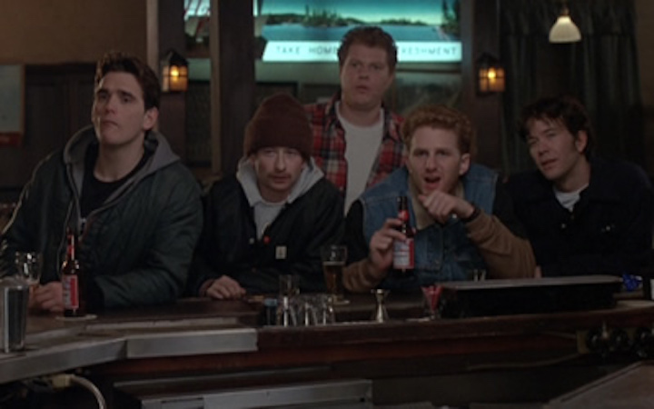
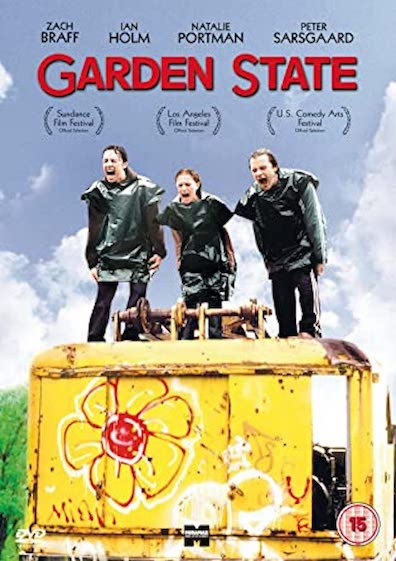

Another movie genre I love is movies that make you think or that have deeper messages to them. Down below you will see some of my favorites!
Beautiful Girls is my second all time favorite movie. Released in 1996, director Ted Demme does a great job showcasing the struggles of just trying to make it through your 20s and 30s and the facts of having an early mid-life crisis. Willie (Timothy Hutton), moved to New York City to persure his dream of playing piano, yet is getting little pay, and the same "sad" gigs, as he likes to call it. He goes home for his high school reunion to meet up with some of his buddies (Matt Dillon, Michael Rapaport, Rosie O'Donell, Noah Emmerich) from that time of his life, and realized how much nothing has really changed there. The popular kid in high school is still lost in his glory days, one has already settled down and had kids, one is struggling with his relationship, and Willie is stuck between to loves, and even meets his new neighbor, a 13 year old girl, (natalie Portman), the bartenders cool cousin (Uma Thurman) and has some of the biggest realizations of his life.
Garden State is a great movie to think about life to. This sometimes considered "indie movie", was released in 2004 directed by and starring Zach Braff, as well as Natalie Portman, Peter Sarsgaard, and Ian Holm. Andrew Largeman (Zach Braff) is a small time actor living in Los Angles until he gets an unexpected phone call from his father, that his mother has died. He flys back to his home town of Orange, New Jersey. He meets back up with his old high school buddies and realizes how sad and dank is homw town has become, and how distanced he's become from his family. He meets bubbly Sam, (Natalie Portman) who is a pathological liar with epilepsy and those two become very close in the time of Andrew's journey home. They go on little adventures through is few days back home nd realizes how much he's missed. This movie has one of my favorite soundtracks ever, with music from the Shins, Coldplay and Zero-7.
